カテゴリ：ブログ作成～公開後～
投稿日：2025年5月17日
10回目となる今回はトップページに更新履歴を表示します！
ブログの変化の過程を楽しんでもらいたいのですが、どこが変わったのかわからなかったら意味ないですよね！
別ページに更新履歴をリスト化し、トップページには最新5件と過去履歴へのリンクを表示させたいです。
ということで早速ChatGPTに聞いてみます！
方法1は最新5件をその都度変え、index.htmlとhistory.htmlをそれぞれ更新する必要がありそうです。
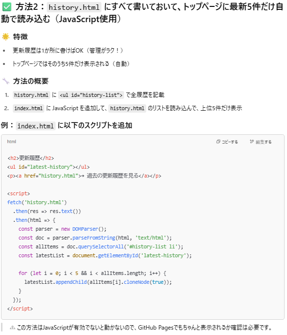方法2はJavaScriptを使用してhistry.htmlの更新履歴の最新5件を自動的に取得してindex.htmlに表示してくれるみたいです。
JacaScriptを使うのは初めてですが、せっかくなので方法2で挑戦してみましょう！
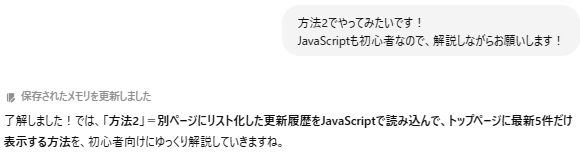JavaScriptも初心者ということを伝えると、メモリが更新されましたね！
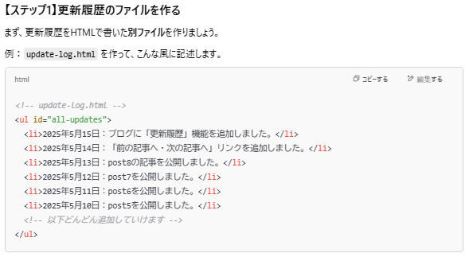ステップ1 まずは更新履歴のページを作成します。
方法を提案してくれた段階ではhistory.htmlとなっていましたが、案を決定したあとはupdate-log.htmlを作るようにとなっています。
このように提案段階と実施段階でやり方が変わる場合があるので、実際に作業を始めるのは案を決定してからのほうがいいですね！
まずはupdate-log.htmlを作成し、そこに更新履歴をリスト化します。
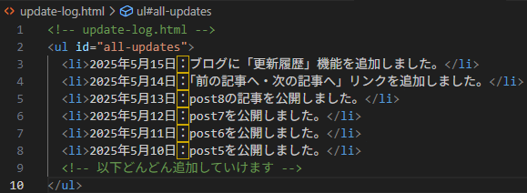階層の指示はなかったのでindex.htmlと同じ階層に作成しました。
更新履歴にall-apdatesというidを設定し、それを指定することで読み込めるようにするみたいです。
ステップ2 トップページに読み込む場所を作ります。
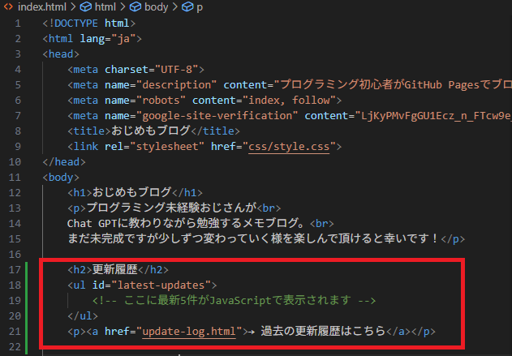ページ内の一番上に表示するようにしました。
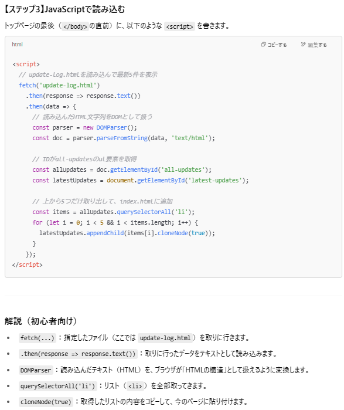ステップ3 JavaScriptを追加します。
お～～～。まったくわからねぇ～～～。でも初心者向けの解説をしてくれてますね！
ひとつずつ解読していきましょう。
なるほど。大まかな動きはわかりましたが、そもそも.thenって何ですか？っていう段階なので、聞いてみます。
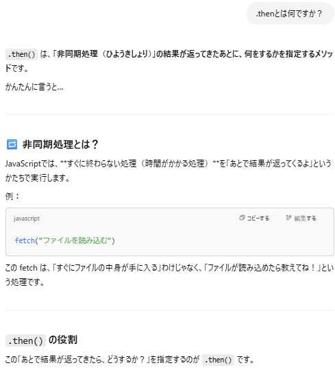
.then() は、非同期処理の結果が返ってきたあとに「何をするか」を指定するメソッドです。
たとえば fetch() を使うと、すぐに結果が返るわけではなく、Responseオブジェクトを返す Promise（約束） が返ってきます。
「今はまだデータは無いけど、取れたら渡すよ」という約束です。
この Promise に対して .then() を使うことで、結果が返ってきたときに行いたい処理を続けて書くことができます。
これを宅配サービスに置き換えると、
fetch(私：荷物欲しいけどまだこないなー).then(宅配業者：荷物届いたら渡すわー！）.then(私：届いたら開けてあれしよーっと！)ってことみたいです！
こんなかんじで一行ずつ細かく聞いてみると以下のようになりました。
fetch('update-log.html')
↑update-log.htmlというファイルを、サーバーに「ちょうだい」ってリクエストするよ！
.then(response => response.text())
↑サーバーから返ってきた「応答（response」を、テキスト（文字列）として読み取るよ！
.then(data => {
↑テキストで受け取った内容を「data」という名前で扱うよ！
const parser = new DOMParser();
↑parserという変数に「文字列をHTMLとして読み取るツール(DOMParser)」を入れておくよ！
const doc = parser.parseFromString(data, 'text/html');
↑dataの中のHTML文字列を、「HTML構造(DOM)」として解析して、docに入れるよ！
(第2引数'text/html'は「これはHTMLですよ」と教えるためのもの)
const allUpdates = doc.getElementById('all-updates');
↑読み込んだHTMLの中から、<ul id="all-updates">を見つけてallUpdatesに入れるよ！
all-apdatesというのはupdate-log.htmlで設定しましたね！
const latestUpdates = document.getElementById('latest-updates');
↑今表示しているページ(index.html)の中から<ul id="latest-updates">を見つけて入れるよ！
latest-upatesはindex.htmlに入力しましたね！そこに取得したデータを入れるよ！ってことです。
const items = allUpdates.querySelectorAll('li');
↑読み込んだHTMLの中の<li>要素たちを全部集めてitemsに入れるよ！
for (let i = 0; i < 5 && i < items.length; i++) {
↑aitemsの中から、最大5個までループで取りだすよ！
(もし5件より少なかったら、あるだけ処理するよ！)
latestUpdates.appendChild(items[i].cloneNode(true));
↑取りだした<li>を複製(clone)して、今のページの<ul id="latest-updates">に追加していくよ！
ということみたいです！何とか理解できたかな。。。？ま、使っていくうちに覚えるでしょう！
なんとなく理解できたところでコードをindex.htmlのbodyの直前に入力します。
するとどうでしょう、、、
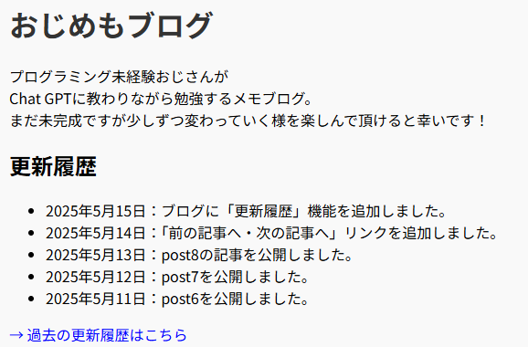表示されましたー！！！
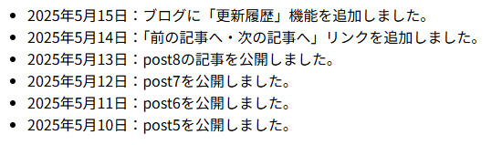過去の更新履歴もばっちりです！！！今入力されている更新履歴はChatGPTに出してもらった例文なので、正しいものに書き換えます。
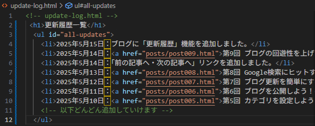update-log.htmlを編集しました。すると～～～？
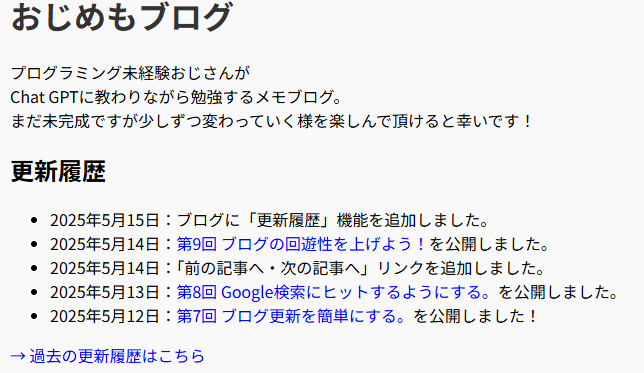トップページも自動的に更新されてます！！やったーーー成功！！！！！
今回のように細かく解説が必要な場面ではChatGPTが非常に有用だと感じました。
動画やWEBで解説動画などを見ていて分からない箇所があったとき、いちいち別画面で検索して、出てきた動画なりWEBページから自分の必要な情報のある箇所を探して～という手間が省けます。
手順を聞くチャット窓と細かく解説を頼む窓を分けるとより分かりやすいですね！
ということで今回はここまで！！！
カテゴリ：ブログ作成～公開後～